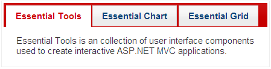

Besides the Syncfusion themes, the tab control also supports all the default jQuery themes.
Properties
|
Name |
Description |
Type of property |
Value it accepts |
Dependency |
|
jQueryAutoFormat
|
Used to define the jQuery themes. |
enum
|
· jQuerySkins.Smoothness · jQuerySkins.UILightness · jQuerySkins.UIDarkness · jQuerySkins.UIStart · jQuerySkins.Redmond · jQuerySkins.Cupertino · jQuerySkins.SouthStreet · jQuerySkins.Blitzer · jQuerySkins.Humanity · jQuerySkins.HotSneaks · jQuerySkins.ExciteBike · jQuerySkins.Vader · jQuerySkins.DotLuv · jQuerySkins.MintChoc · jQuerySkins.BlackTie · jQuerySkins.Trontastic · jQuerySkins.SwankyPurse |
NA |
Using Builder
The following steps explain how to set jQuery themes through the builder for the tab control.
1. In View, create the contents of the tab with ul and li (for headers) and div tags (for content), and invoke the tab helper with the control ID as the first argument, followed by the AutoFormat method with the desired theme as an argument.
|
View[ASPX] <div id="tabContents" style="visibility: hidden"> <ul> <li><a href="#tools">Essential Tools</a></li> <li><a href="#chart">Essential Chart</a></li> <li><a href="#grid">Essential Grid</a></li> </ul> <div id="tools"> Essential Tools is a collection of user-interface components used to create interactive ASP.NET MVC applications. </div> <div id="chart"> Essential Chart is a business-oriented charting component. Essential Chart features an advanced styles architecture that makes complex multi-level formatting very easy. </div> <div id="grid"> Essential Grid MVC offers a full-featured grid control with extensive support for grouping and displaying hierarchical data. </div> </div> <%=Html.Syncfusion().Tab("myTab") .TargetControlId("tabContents") .jQueryAutoFormat(jQuerySkins.Blitzer)%>
|
|
View[ASPX] <div id="tabContents" style="visibility: hidden"> <ul> <li><a href="#tools">Essential Tools</a></li> <li><a href="#chart">Essential Chart</a></li> <li><a href="#grid">Essential Grid</a></li> </ul> <div id="tools"> Essential Tools is a collection of user-interface components used to create interactive ASP.NET MVC applications. </div> <div id="chart"> Essential Chart is a business-oriented charting component. Essential Chart features an advanced styles architecture that makes complex multi-level formatting very easy. </div> <div id="grid"> Essential Grid MVC offers a full-featured grid control with extensive support for grouping and displaying hierarchical data. </div> </div> @{ Html.Syncfusion().Tab("myTab") .TargetControlId("tabContents") .jQueryAutoFormat(jQuerySkins.Blitzer).Render();}
|
2. Build and run the application.
Using Properties Model
The following steps explain how to set jQuery themes for the tab control through the properties model.
1. In the controller, create an instance of TabModel.
2. Define the AutoFormat property and pass the instance through the view-specific data to the view.
|
[Controller] public ActionResult Index() { //Create an instance of TabModel. TabModel myModel = new TabModel(); myModel.TargetControlId = "tabContents"; myModel.jQueryAutoFormat = jQuerySkins.Blitzer;
//Pass the instance through the view data to the view. ViewData["myTab"] = myModel; return View(); }
|
3. In View, create the contents of the tabs with ul and li (for headers) and div tags (for content), and invoke the tab helper with the view data key as the control ID.
|
View[ASPX] <div id="tabContents" style="visibility: hidden"> <ul> <li><a href="#tools">Essential Tools</a></li> <li><a href="#chart">Essential Chart</a></li> <li><a href="#grid">Essential Grid</a></li> </ul> <div id="tools"> Essential Tools is a collection of user-interface components used to create interactive ASP.NET MVC applications. </div> <div id="chart"> Essential Chart is a business-oriented charting component. Essential Chart features an advanced styles architecture that makes complex multi-level formatting very easy. </div> <div id="grid"> Essential Grid MVC offers a full-featured grid control with extensive support for grouping and displaying hierarchical data. </div> </div> <%=Html.Syncfusion().Tab("myTab")%>
|
|
View[cshtml] <div id="tabContents" style="visibility: hidden"> <ul> <li><a href="#tools">Essential Tools</a></li> <li><a href="#chart">Essential Chart</a></li> <li><a href="#grid">Essential Grid</a></li> </ul> <div id="tools"> Essential Tools is a collection of user-interface components used to create interactive ASP.NET MVC applications. </div> <div id="chart"> Essential Chart is a business-oriented charting component. Essential Chart features an advanced styles architecture that makes complex multi-level formatting very easy. </div> <div id="grid"> Essential Grid MVC offers a full-featured grid control with extensive support for grouping and displaying hierarchical data. </div> </div> @{ Html.Syncfusion().Tab("myTab").Render();}
|
4. Build and run the application.
The following screenshot shows the tab control output with a jQuery theme.

Figure 270: Tab with jQuery Theme